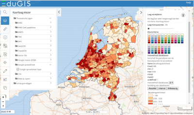

EduGIS
EduGIS is het platform voor geo-informatietechnologie in het onderwijs. EduGIS heeft een eigen kaartmodule (EduGIS Kaart) met meer dat 500 kaartlagen voor Nederland, Europa en de Wereld. Daarnaast biedt het informatie over geo-informatietechnologie en lesmateriaal voor onderwijs met geo-informatietechnologie. Hierbij wordt gebruik gemaakt van EduGIS Kaart, ArcGIS Online, QGIS en Google Earth.
Geodan Research en EduGIS
EduGIS is een samenwerkingsverband van verschillende organisaties: software- en dataleveranciers en organisaties die verantwoordelijk zijn voor de inhoud en het educatieve deel van de website.
Geodan (Research) verzorgt sinds 2004 de EduGIS kaartmodule. De kaartmodule bestaat uit een viewer voor de browser en de nodige services en databases waarmee de geografische data wordt geserveerd
In 2004 - nog voor de komst van Google Maps - was de viewer van EduGIS een van de eerste meer uitgebreide kaartviewers op het web. Door de jaren heen wordt de viewer steeds vernieuwd om de educatieve waarde te verbeteren. Geodan Research volgt daarbij bestaande en nieuwe Open Source projecten op het gebied van viewers en (geo-)services.
In 2019 wordt weer een nieuwe versie opgeleverd. Nieuwe functies zijn bijvoorbeeld het kunnen werken met vector data, live koppelingen met (online-) spreadsheets, een What You See Is What You Get (Wysiwig) QGIS kaartserver, 3D weergave, betere touch en responsive design en de mogelijkheid om speciaal op lesmodules toegespitste kaartconfiguraties op te slaan en te publiceren.